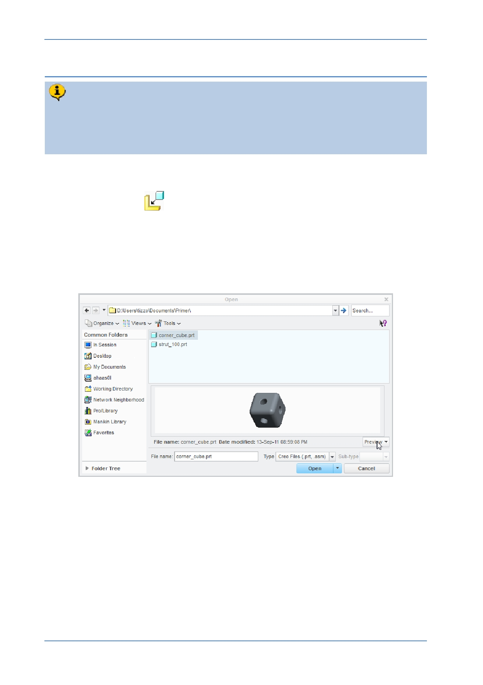

PTC Academic Program
Step 2: Adding the first component to the assembly
The first component you will add to the assembly is a corner cube part. The cube
should be positioned using the Default contraint type. This will place the cube at
the center of the assembly and make it a stable reference that other components
can be assembled to.
1. Selecting the component to assemble:
Click Assemble
from the Component group of the Model tab.
In the Open dialog box:
o Select the CORNER_CUBE.PRT model.
o In the lower-right corner of the dialog box, click to expand the Preview
pane.
o Click Open to assemble this component.
© 2012 PTC
Creo Parametric 2.0 Primer
Page 66